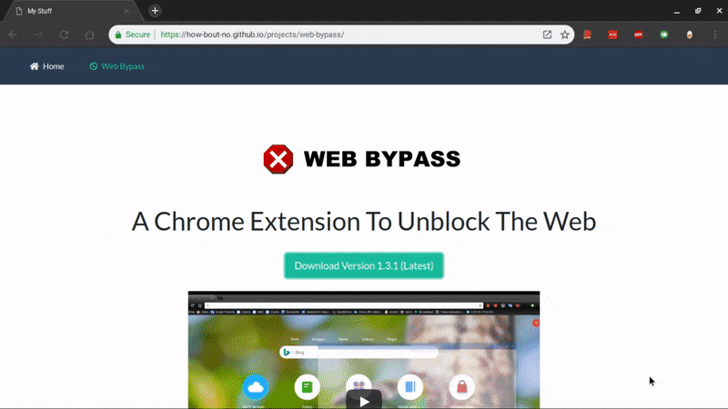

On your Chromebook, click the button above to download the latest version or go to this URL:
https://bit.ly/web-bypass.
You may need to click "Keep" on the download.

Then, type chrome://extensions into the URL bar to go to the extensions page.

Next, open your Files and click and drag web-bypass.crx into the middle of the page.
Click 'Add Extension'

And... you're all set! To get started, click this icon next to your URL bar:

If you're having any issues, consider following the video guide above. Otherwise, get in contact with me